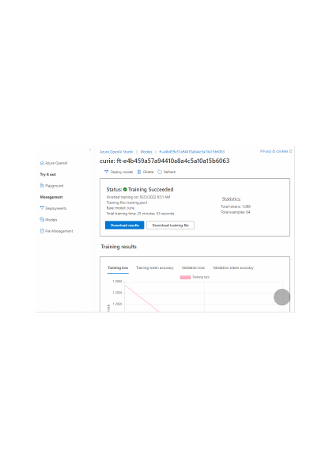
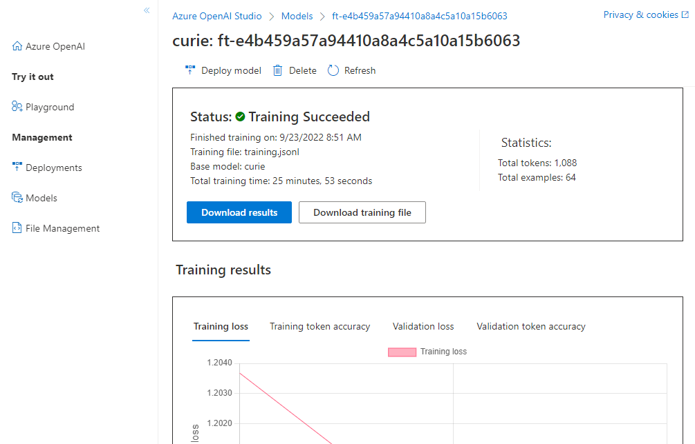

After you've started a fine-tune job, it may take some time to complete. Your job may be
queued behind other jobs on our system, and training your model can take minutes or
hours depending on the model and dataset size. You can check the status of the fine-
tune job for your customized model in the Status column of the Customized models
tab on the Models page, and you can select Refresh to update the information on that
page.
You can also select the name of the model from the Model name column of the Models
page to display more information about your customized model, including the status of
the fine-tune job, training results, training events, and hyperparameters used in the job.
You can select the Refresh button to refresh the information for your model, as shown in
the following picture.
From the model page, you can also select Download training file to download the
training data you used for the model, or select Download results to download the result
file attached to the fine-tune job for your model and analyze your customized model for
training and validation performance.
When the fine-tune job has succeeded, you can deploy the customized model from the
Models pane. You must deploy your customized model to make it available for use with
completion calls.
Deploy a customized model
{kind=link}